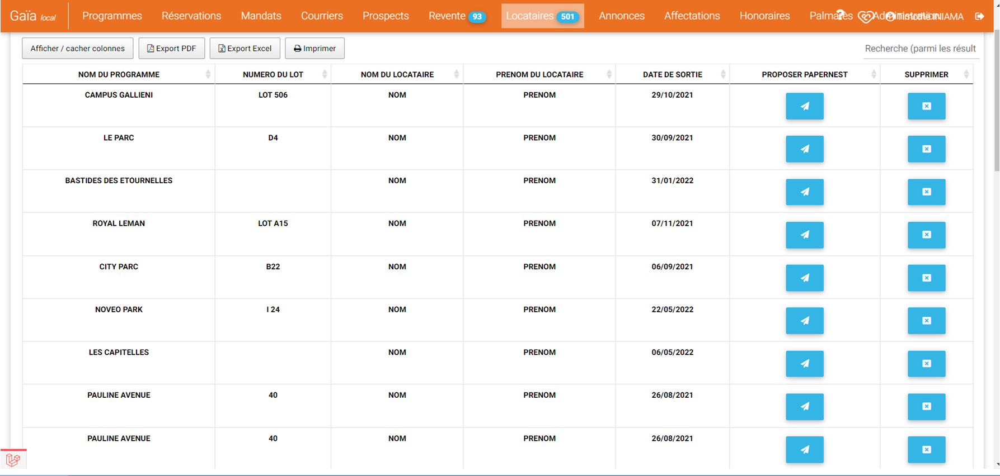
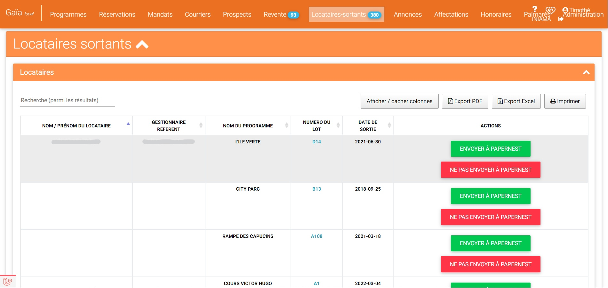
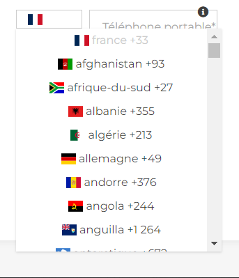
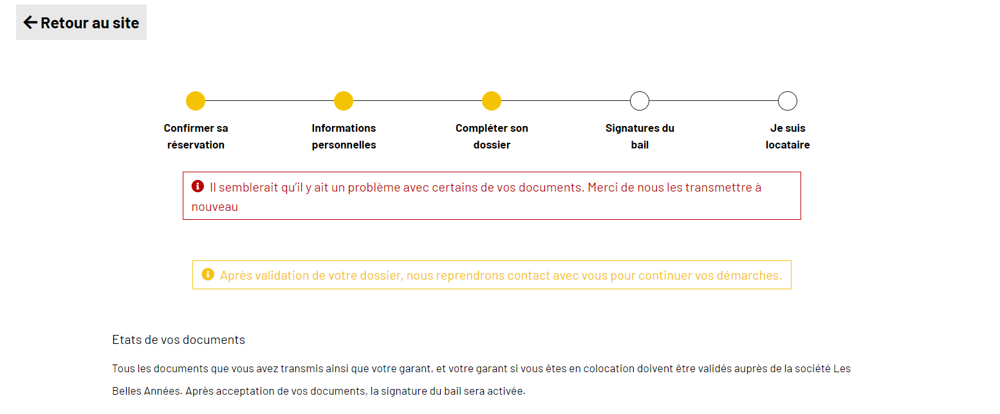

Stage 1er année
Contexte
Du 16 mai au 1 juillet 2022 j'ai effectué mon stage dans l'entreprise Com & Company qui est une agence web qui travail avec le groupe Valeur et Capital, groupe qui est dans le domaine immobilier. Cette entrpirse se situe à Lyon (94 Quai Charles de Gaulle). Dans cette entreprise j'ai rejoint le service informatique qui développe les applications, ce service est répartie en plusieurs équipe via un systeme d'ilôt de 4 à 6 personnes.
Missions / Tâches
1erMission:Je devais crée une évolution pour l'application Gaia qui sert à la gestion des locations et au suivi des mandat de gestion. Le but de l'évolution était d'ajouter un nouvel onglet qui permetait d'afficher la liste des locataires avec pour chacun un bouton qui permetait d'envoyer leur profil à un partenaire (Papernest), dans l'onglet je devais faire afficher plusieurs information(nom, prénom, date de sortit...).
J'ai tout d'abords commencé par installer le projet via GitHub, après une rapide présentation de la solution on m'a décrit le travail que je devais réaliser, puis j'ai réalisé la tâche en m'aidant la documentation ainsi que le code existant
 Pour cette misson j'ai utilisé le Framework Laravel car c'est la technologie qui a été utilisé pour crée l'application et j'ai développé cette ajout sur une nouvelle branche. Cette tâche était difficile car je travaillais avec un novelle environnement technologique comme professionnel.
2èmeMission: Pour cette mission j'ai ajouter un champ sur un formulaire pour saisir son numero de téléphone en choisissant au préalable un indicataif sur l'application Max cover pour cette mission j'ai utilisé le Framework Vue.js.
J'ai commencé par apprendre les bases du language/framework en lisant la documentation et en faisant des tests car je le connaissais très peu, puis j'ai commencé a déveleopper la solution sur un projet à part avant de l'ajouter à l'application.


Pour rendre la selection de l'indicataif plus facile j'ai ajouté des drapeaux à coté de chaque indicataif grâce à une collection de drapeau trouvé sur GitHub

J'ai trouvé cette mission difficile car j'ai du apprendre un nouveau language/framework, j'ai eu aussi du mal à faire fonctionner la collection de drapeaux
3èmeMission: On m'a confié la tâche d'ajouter un message d'erreur sur l'application Les Belles années, cette aplication sert à la gestion des logements étudiant dans le cas ou il y avait un probleme lors le l'envoie du formulaire par exemple le document envoyé n'est pas valide, j'ai utilisée le Framework Vue.js
Cette tâches était la dernière de mon stage, elle n'était pas difficile mais interressante car pour la réaliser j'ai du discuter avec le service communication pour savoir ou mettre le message et savoir ce qu'il devait afficher.
Bilan
Grâce à ce stage j'ai fait un premier pas dans le monde de l'entreprise, j'ai appris à utiliser de nouvelle technologies comme Larvel, Vue.js, PHPStorm ou GitHub, j'ai aussi découvert de nouvelle méthode de travail avec les sprints, j'ai eu un peu de mal à m'habitué a mon nouvel environnement de travail, mais je m'y suis vite fait.